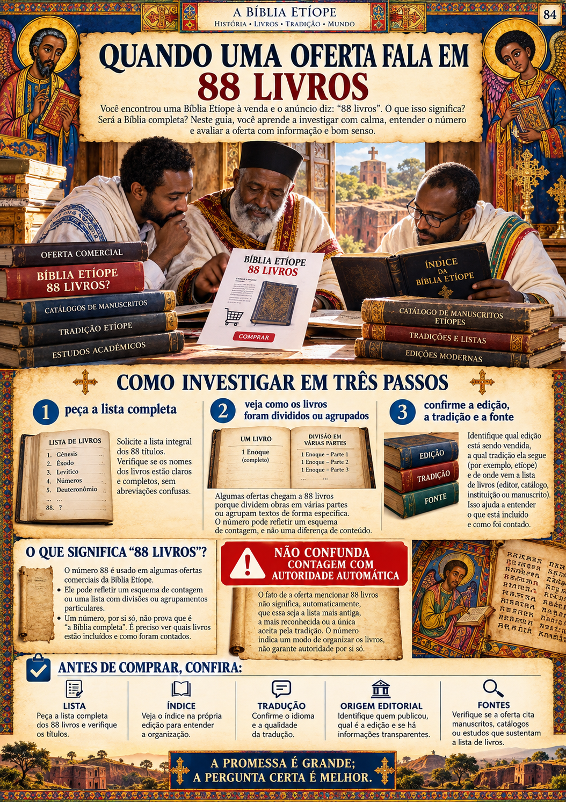
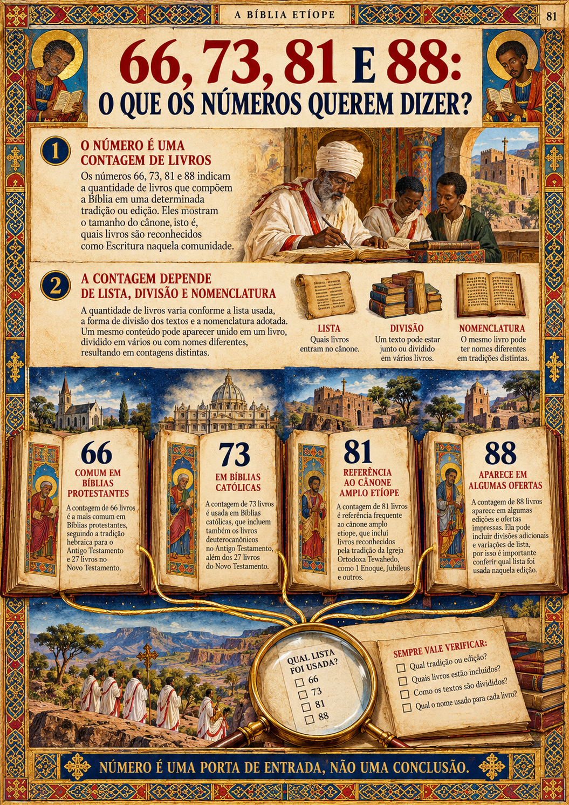
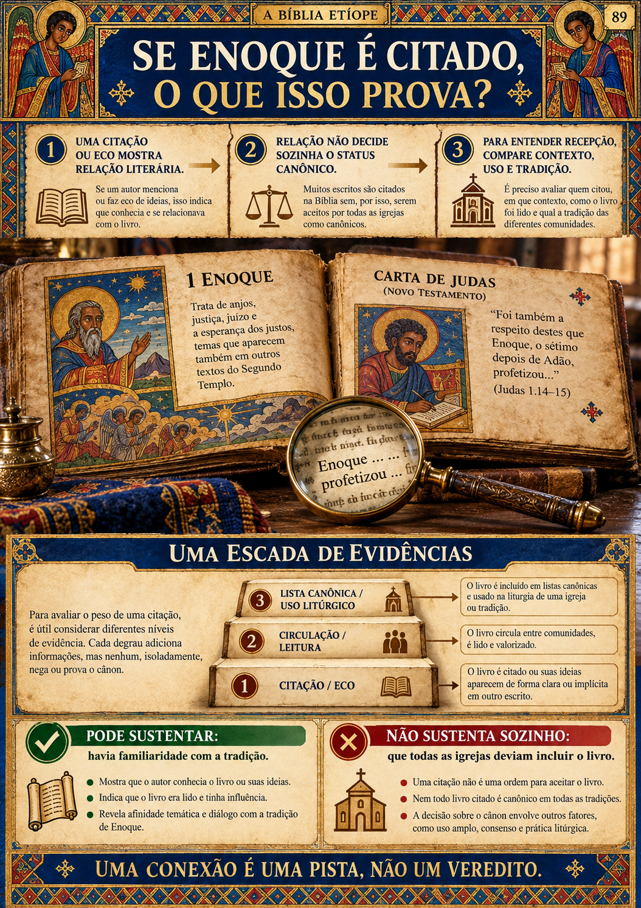
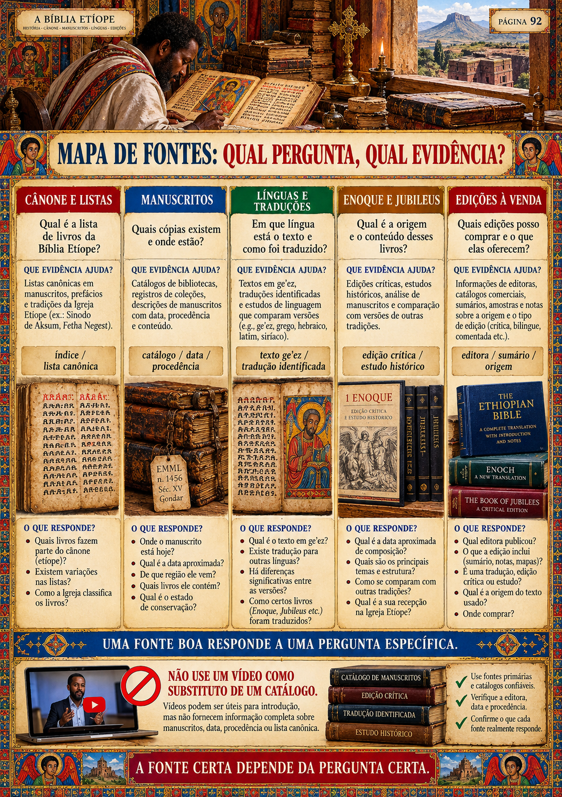
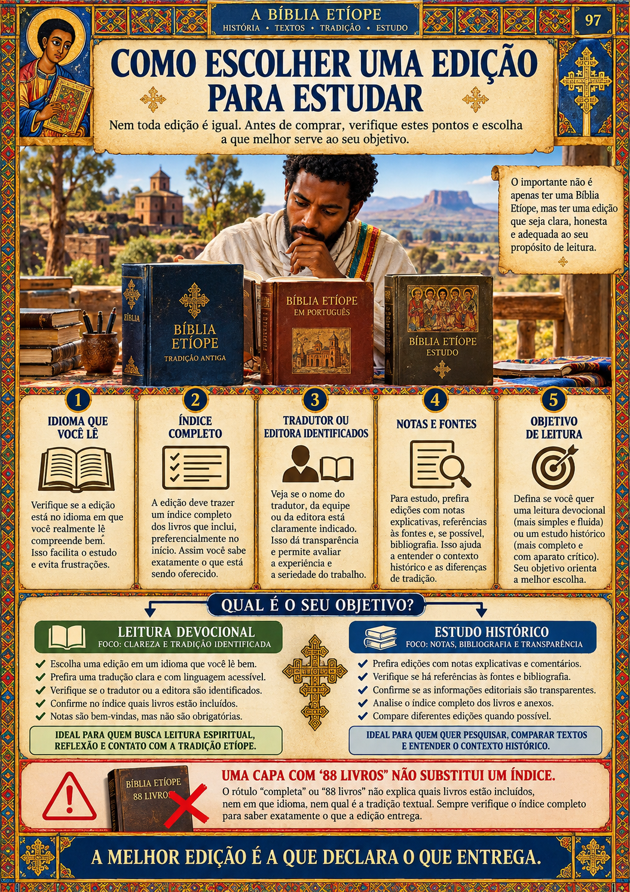
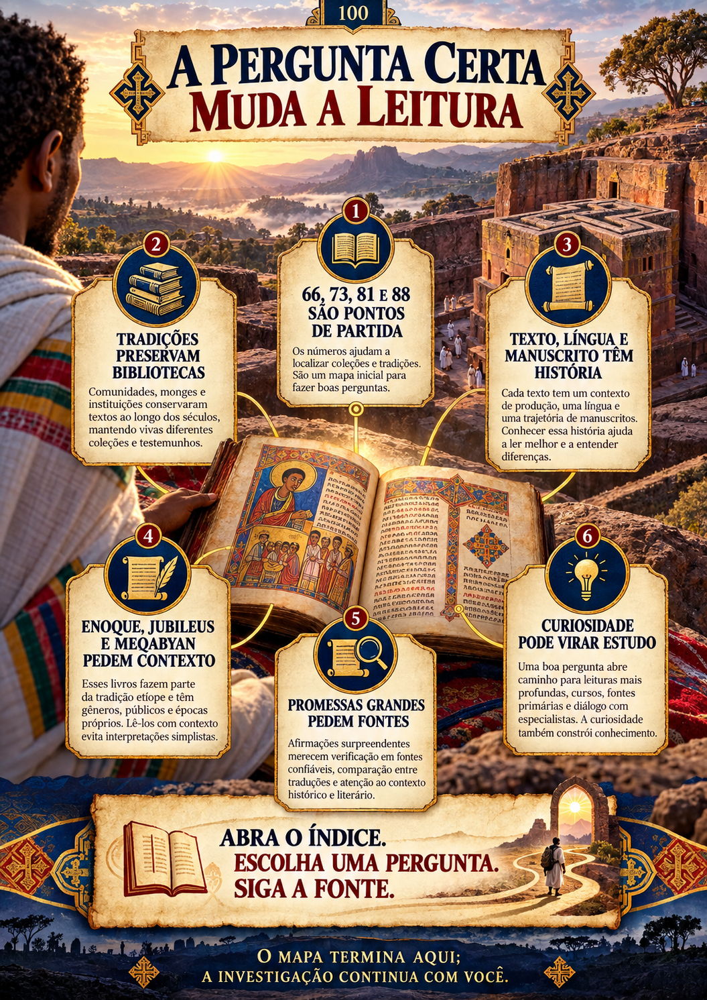

Textos e tradições judaicas
Obras circulam em hebraico, aramaico e grego, antes de existir uma única lista cristã.
ATLAS VISUAL • 100 PÁGINAS
Por que algumas Bíblias têm 66 livros, outras 73, a tradição etíope é associada a 81 — e anúncios falam em 88?
Entre desertos, manuscritos e tradições antigas existe uma história que a maioria dos leitores nunca recebeu organizada. O mapa está aqui.
Quero descobrir o que ficou de fora →Não é teoria solta. É um mapa visual para ler, comparar e entender.


Você ouviu que existem livros “esquecidos”. A pergunta não é apenas quais — é como, por quem e em qual tradição eles foram preservados.
ONDE A HISTÓRIA SE BIFURCOU
O Atlas revela os momentos em que textos, línguas e listas passaram a ser recebidos de modos diferentes — e o que cada vestígio permite afirmar.
Obras circulam em hebraico, aramaico e grego, antes de existir uma única lista cristã.
Alguns textos ganham uso amplo; outros permanecem mais locais ou entram em debate.
Tradições organizam bibliotecas recebidas com critérios e histórias próprias.
Uma tradição antiga mantém e transmite uma biblioteca mais ampla, incluindo textos como 1 Enoque.
Uma edição moderna e uma promessa comercial exigem lista, contexto e fonte.
O Atlas Visual organiza as perguntas que um anúncio não responde: listas, línguas, manuscritos, textos-chave e fontes.
66, 73, 81 e 88 deixam de ser slogans e viram listas, critérios e tradições reconhecíveis.
Enoque, Jubileus e Meqabyan aparecem em contexto — sem atalhos, sem mistério inventado.
Você aprende a separar uma alegação forte de uma conclusão sustentada por fonte.
UMA AMOSTRA DO QUE VOCÊ VAI ABRIR




A RESPOSTA NÃO É UMA FRASE
O QUE VOCÊ RECEBE
Mapas, comparações, manuscritos, linhas do tempo, guias de fontes, trilha de estudo e ficha de investigação.
Para quem quer ir além da curiosidade e finalmente entender o que está lendo.